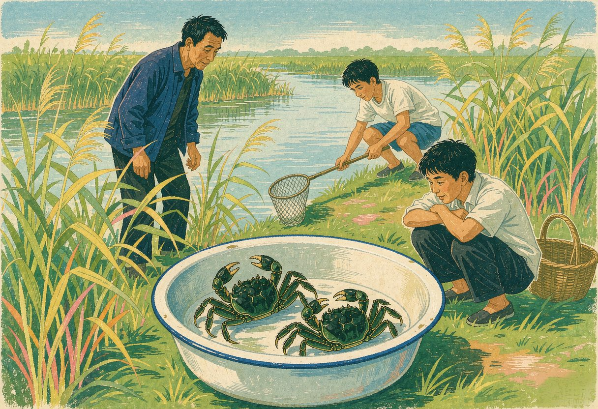

那日，漫步杨浦滨江，江风轻拂，丝丝暖意。抬眼望去，众多五彩斑斓的花草，或娇艳欲滴，或清新淡雅，宛如一幅绚丽的画卷，在眼前徐徐展开。
正沉醉于美景之中，不经意间，一抹熟悉的身影闯入我的眼帘——是芦苇。它们在微风中轻轻摇曳，那飘逸的芦花，似云朵般轻盈，灵动而优雅。我的心猛地一颤，刹那间，回忆起第一次见到芦苇的情景。
1968年深秋，怀揣着未知与憧憬，我上山下乡来到了崇明农场。
下了码头，第一眼看到的植物便是芦苇。它们一丛丛、一片片，在秋风中傲然挺立，那修长的身姿，那随风舞动的叶片，仿佛在诉说着这片土地的故事。那一刻，我被它们那顽强的生命力所打动……
初到农场，生活的艰辛远超想象。崇明的冬天，比上海冷了许多。我们住的是简陋的茅舍，我带来的垫被略显单薄，夜晚躺在床上，会令人感到丝丝寒意。
一天，几个伙伴神秘兮兮地把我拉到一边，说要给我一个惊喜。他们带着我来到一片芦苇荡，那里的芦苇长得又高又密。大家分工合作，有的负责用镰刀割芦苇，有的负责把割下来的芦苇捆扎起来。不一会儿，我们就采集了不少芦苇。把芦苇背回宿舍，放在太阳下晒透。晒干的芦苇散发着一种淡淡的清香，让人闻着就觉得温暖。
把芦苇铺在床上，再铺上垫被。说来也奇怪，原本冰冷的床一下子暖和了不少。躺在柔软的芦苇上，我仿佛能感受到芦苇传递过来的温度，那是大自然的温暖，也是伙伴们之间深厚的情谊。从那以后，我对芦苇一下子有了亲近感，它不再仅仅是一种植物，更是我生活中的伙伴，在这艰苦环境中，给我带来温暖与慰藉。
端午节到了。那些被称为“小家户”的老职工们，热情地给我们这些知青送来了粽子。当一个个热气腾腾的粽子递到我手中时，我迫不及待地剥开粽叶，一股浓郁的香气扑鼻而来。咬上一口，软糯香甜，那滋味至今都让我回味无穷。
出人意料的是，这些粽子竟然是用芦苇叶包的。那带着淡淡清香的芦苇叶，包裹着饱满的糯米和香甜的馅料，仿佛把整个端午的祝福都包在了里面。那一刻，我对芦苇又有了新的认识，它不仅仅可以用来保暖，还可以化作美食的包装，为人们的生活增添一份别样的滋味。
印象最深的，还是跟着连队的老职工捉螃蟹的经历。
秋风起，蟹脚痒。挑一个“场休”日，我们拿着自制的工具，有竹篓，有长柄的网兜，还有用来挖螃蟹洞的小铲子。兴致勃勃地来到了芦苇丛生的泯沟边。
老职工们经验丰富，他们笑着说，螃蟹与芦苇有着不解之缘。芦苇丛为螃蟹提供栖息场所，芦苇的根系、嫩茎和叶片等都可以成为螃蟹的美食，螃蟹会在芦苇的根部附近挖掘洞穴，作为自己的巢穴，它们经常躲藏在芦苇丛的底部或缝隙中。
我们小心翼翼地走进水里，眼睛紧紧地盯着水面和芦苇丛，生怕错过任何一只螃蟹的踪迹。突然，一个伙伴兴奋地喊了起来：“这里有一只！”大家赶紧围过去，只见一只螃蟹正挥舞着它那大大的钳子，耀武扬威地爬着。一个老职工眼疾手快，用网兜一下子就把它网住了，然后稳稳地放进竹篓里……
日落西山，满载而归，那种兴奋的心情，至今记忆犹新。
如今，在杨浦滨江再次看到芦苇，我对它又有了新的感悟：原来，和那些娇艳的花草一样，芦苇也可以成为装饰我们美丽的家园的精灵！谢谢你，芦苇！感谢你曾给予我的温暖、陪伴与美好回忆。
（ 本文刊登在2026年第5期《现代家庭》 ）